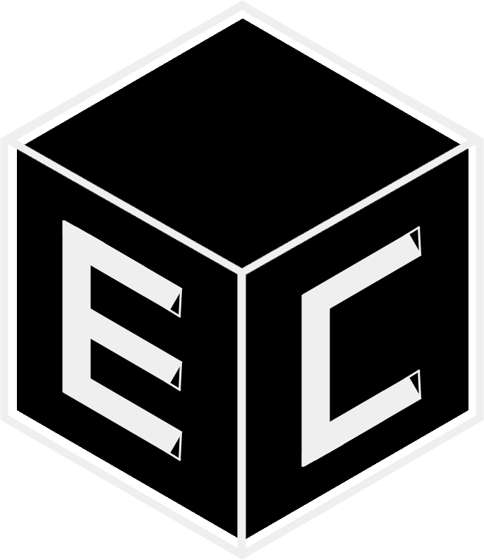

Welcome / 欢迎光临
Welcome / 欢迎光临
Welcome to tours.hci.edu.sg! This website was created to enhance your tour experience around Hwa Chong. You can use this website to go on a self-tour, or refer to it while on a guided tour.
We've prepared a tutorial for you. Keep scrolling down and we'll take you through how to use the website.
Below is a screenshot of the homepage. We've numbered 3 parts of the homepage for easier reference.

Click on the landmark card to view the description of the landmark.
When opened, click on ✕ at the top right hand corner of the card to close the card.
The cards are ordered based on how close you are to the landmarks.
For best viewing experience, please enable location services.
Clicking the More Button at the bottom right hand corner of the page will bring up a panel of options. More on this below.

Here are some videos demonstrating how to use the map.
Tap and drag to move the map around.
Use both fingers to pan, rotate and zoom.
The map text will also turn and change in size to match your rotation and zoom level.
The grey shapes seen on the map are buildings. Tap on a building to select it. The building will be highlighted in red.
If the building has a landmark card associated with it, the landmark card will be displayed.
In the video, Clock Tower Blk was selected, so the Clock Tower card was shown.
This is a screenshot of the Guestbook page with some entries already there.

As a record of your visit to tours.hci.edu.sg, pen a message!
You can do so by going to the Guestbook and clicking + after your tour. We provide the option to write anonymously as well.
This website is presented to you by:
Hwa Chong Institution
Electronic Communications and Computer Club
Alistair Cheong
Wang Yiqin
Chen Zerui
Wu Jiayang
Additional libraries used: OpenLayers, Firebase
Special thanks to: College Student National Education Council, HC Corporate Comms, HC Chinese Department, HC IT Department, Freepik from flaticon
That's it for the tutorial! Thank you for your time. Press the button below to navigate to the homepage.